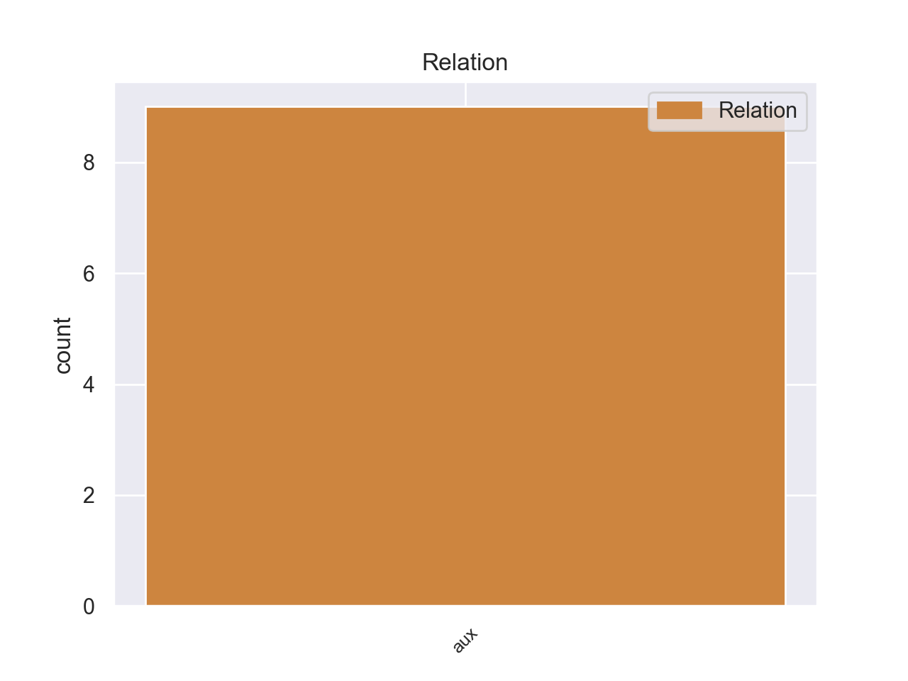
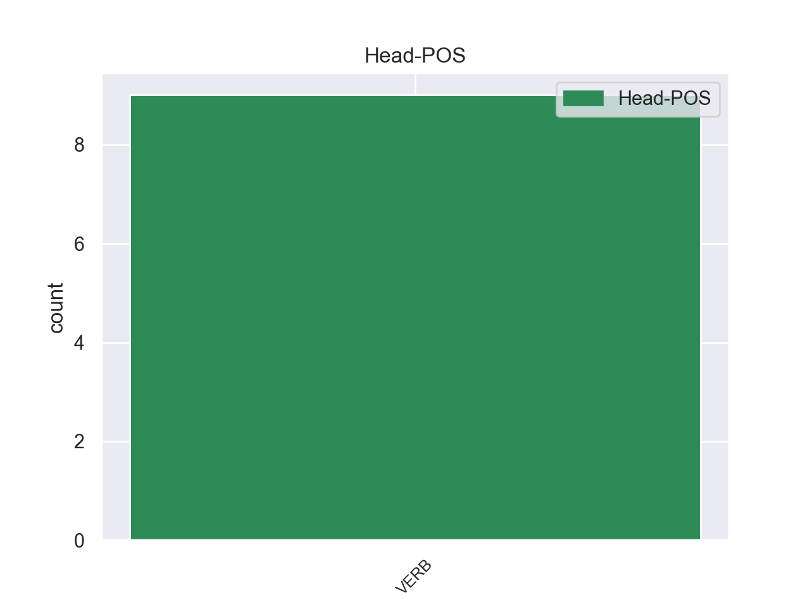
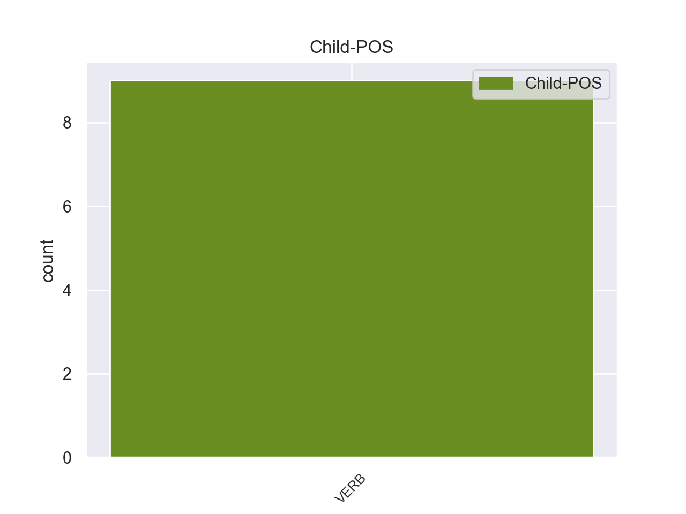

Distribution of features within this leaf



Agreement Rules sorted by frequency.
- When the dependent token is the auxiliary(aux) of the head token, and the dependent token is VERB.
1 Εξαιτίας _ _ _ _ 0 _ _ _
2 του _ _ _ _ 0 _ _ _
3 , _ _ _ _ 0 _ _ _
4 όπως _ _ _ _ 0 _ _ _
5 έχει _ _ _ _ 0 _ _ _
6 οριστεί οριστεί VERB _ Aspect=Imp|Mood=Ind|Number=Plur|Person=1|Tense=Pres|VerbForm=Fin|Voice=Act 0 _ _ _
7 , _ _ _ _ 0 _ _ _
8 κινεζικού _ _ _ _ 0 _ _ _
9 απαρτχάιντ _ _ _ _ 0 _ _ _
10 , _ _ _ _ 0 _ _ _
11 οι _ _ _ _ 0 _ _ _
12 Θιβετιανοί _ _ _ _ 0 _ _ _
13 έχουν έχοω VERB _ Aspect=Imp|Mood=Ind|Number=Sing|Person=3|Tense=Pres|VerbForm=Fin|Voice=Act 6 aux _ _
14 σήμερα _ _ _ _ 0 _ _ _
15 χαμηλότερο _ _ _ _ 0 _ _ _
16 προσδόκιμο _ _ _ _ 0 _ _ _
17 ζωής _ _ _ _ 0 _ _ _
18 , _ _ _ _ 0 _ _ _
19 ποσοστό _ _ _ _ 0 _ _ _
20 αλφαβητισμού _ _ _ _ 0 _ _ _
21 , _ _ _ _ 0 _ _ _
22 και _ _ _ _ 0 _ _ _
23 κατά _ _ _ _ 0 _ _ _
24 κεφαλή _ _ _ _ 0 _ _ _
25 εισόδημα _ _ _ _ 0 _ _ _
26 από _ _ _ _ 0 _ _ _
27 τους _ _ _ _ 0 _ _ _
28 Κινέζους _ _ _ _ 0 _ _ _
29 αποίκους _ _ _ _ 0 _ _ _
30 του _ _ _ _ 0 _ _ _
31 Θιβέτ _ _ _ _ 0 _ _ _
32 . _ _ _ _ 0 _ _ _
Disagree Examples:
1 Αν _ _ _ _ 0 _ _ _
2 οι _ _ _ _ 0 _ _ _
3 εταιρείες _ _ _ _ 0 _ _ _
4 συμμορφωθούν συμμορφωθούν VERB _ Aspect=Perf|Mood=Ind|Number=Plur|Person=3|Tense=Past|VerbForm=Fin|Voice=Pass 0 _ _ _
5 με _ _ _ _ 0 _ _ _
6 αυτό _ _ _ _ 0 _ _ _
7 , _ _ _ _ 0 _ _ _
8 πρέπει _ _ _ _ 0 _ _ _
9 να _ _ _ _ 0 _ _ _
10 έχουν έχοω VERB _ Aspect=Imp|Mood=Ind|Number=Sing|Person=3|Tense=Pres|VerbForm=Fin|Voice=Act 4 aux _ _
11 το _ _ _ _ 0 _ _ _
12 δικαίωμα _ _ _ _ 0 _ _ _
13 να _ _ _ _ 0 _ _ _
14 υποβάλλουν _ _ _ _ 0 _ _ _
15 προσφορές _ _ _ _ 0 _ _ _
16 για _ _ _ _ 0 _ _ _
17 συμβάσεις _ _ _ _ 0 _ _ _
18 . _ _ _ _ 0 _ _ _
1 Ανάλογα _ _ _ _ 0 _ _ _
2 αυξήθηκε _ _ _ _ 0 _ _ _
3 και _ _ _ _ 0 _ _ _
4 ο _ _ _ _ 0 _ _ _
5 ανταγωνισμός _ _ _ _ 0 _ _ _
6 , _ _ _ _ 0 _ _ _
7 πράγμα _ _ _ _ 0 _ _ _
8 που _ _ _ _ 0 _ _ _
9 αναγκαστικά _ _ _ _ 0 _ _ _
10 είχε _ _ _ _ 0 _ _ _
11 επίσης _ _ _ _ 0 _ _ _
12 ως _ _ _ _ 0 _ _ _
13 αποτέλεσμα _ _ _ _ 0 _ _ _
14 να _ _ _ _ 0 _ _ _
15 υπάρχει υπάρχω VERB _ Aspect=Imp|Mood=Ind|Number=Sing|Person=3|Tense=Pres|VerbForm=Fin|Voice=Act 0 _ _ _
16 σε _ _ _ _ 0 _ _ _
17 πολλές _ _ _ _ 0 _ _ _
18 επιχειρήσεις _ _ _ _ 0 _ _ _
19 η _ _ _ _ 0 _ _ _
20 τάση _ _ _ _ 0 _ _ _
21 τούτο τούτο VERB _ Aspect=Imp|Mood=Ind|Number=Sing|Person=3|Tense=Past|VerbForm=Fin|Voice=Act 15 aux _ _
22 να _ _ _ _ 0 _ _ _
23 αποβεί _ _ _ _ 0 _ _ _
24 μερικώς _ _ _ _ 0 _ _ _
25 σε _ _ _ _ 0 _ _ _
26 βάρος _ _ _ _ 0 _ _ _
27 της _ _ _ _ 0 _ _ _
28 ασφάλειας _ _ _ _ 0 _ _ _
29 , _ _ _ _ 0 _ _ _
30 καθώς _ _ _ _ 0 _ _ _
31 και _ _ _ _ 0 _ _ _
32 των _ _ _ _ 0 _ _ _
33 συνθηκών _ _ _ _ 0 _ _ _
34 εργασίας _ _ _ _ 0 _ _ _
35 . _ _ _ _ 0 _ _ _
1 Έτσι _ _ _ _ 0 _ _ _
2 όταν _ _ _ _ 0 _ _ _
3 περί _ _ _ _ 0 _ _ _
4 το _ _ _ _ 0 _ _ _
5 τέλος _ _ _ _ 0 _ _ _
6 του _ _ _ _ 0 _ _ _
7 19ου _ _ _ _ 0 _ _ _
8 αιώνα _ _ _ _ 0 _ _ _
9 η _ _ _ _ 0 _ _ _
10 Οθωμανική _ _ _ _ 0 _ _ _
11 Αυτοκρατορία _ _ _ _ 0 _ _ _
12 άρχισε άρχισε VERB _ Aspect=Imp|Mood=Ind|Number=Sing|Person=3|Tense=Pres|VerbForm=Fin|Voice=Act 22 aux _ _
13 να _ _ _ _ 0 _ _ _
14 δείχνει _ _ _ _ 0 _ _ _
15 σημεία _ _ _ _ 0 _ _ _
16 παρακμής _ _ _ _ 0 _ _ _
17 οι _ _ _ _ 0 _ _ _
18 Μεγάλες _ _ _ _ 0 _ _ _
19 Δυνάμεις _ _ _ _ 0 _ _ _
20 της _ _ _ _ 0 _ _ _
21 εποχής _ _ _ _ 0 _ _ _
22 άρχισαν άρχισαν VERB _ Aspect=Imp|Mood=Ind|Number=Sing|Person=3|Tense=Past|VerbForm=Fin|Voice=Act 0 _ _ _
23 να _ _ _ _ 0 _ _ _
24 συνειδητοποιούν _ _ _ _ 0 _ _ _
25 τα _ _ _ _ 0 _ _ _
26 ίσως _ _ _ _ 0 _ _ _
27 παραμελημένα _ _ _ _ 0 _ _ _
28 συμφέροντά _ _ _ _ 0 _ _ _
29 τους _ _ _ _ 0 _ _ _
30 σ _ _ _ _ 0 _ _ _
31 το _ _ _ _ 0 _ _ _
32 χώρο _ _ _ _ 0 _ _ _
33 αυτό _ _ _ _ 0 _ _ _
34 , _ _ _ _ 0 _ _ _
35 όπου _ _ _ _ 0 _ _ _
36 μάλιστα _ _ _ _ 0 _ _ _
37 σ _ _ _ _ 0 _ _ _
38 την _ _ _ _ 0 _ _ _
39 εποχή _ _ _ _ 0 _ _ _
40 αυτή _ _ _ _ 0 _ _ _
41 του _ _ _ _ 0 _ _ _
42 σιδηροδρόμου _ _ _ _ 0 _ _ _
43 αποκτούσε _ _ _ _ 0 _ _ _
44 ιδιαίτερη _ _ _ _ 0 _ _ _
45 σπουδαιότητα _ _ _ _ 0 _ _ _
46 . _ _ _ _ 0 _ _ _
1 Η _ _ _ _ 0 _ _ _
2 Αμερικανική _ _ _ _ 0 _ _ _
3 Βουλή _ _ _ _ 0 _ _ _
4 υπερψήφισε υπερψήφισε VERB _ Aspect=Perf|Mood=Ind|Number=Sing|Person=3|Tense=Past|VerbForm=Fin|Voice=Act 0 _ _ _
5 νομοσχέδιο _ _ _ _ 0 _ _ _
6 που _ _ _ _ 0 _ _ _
7 κατέθεσαν _ _ _ _ 0 _ _ _
8 οι _ _ _ _ 0 _ _ _
9 Ρεπουμπλικανοί _ _ _ _ 0 _ _ _
10 , _ _ _ _ 0 _ _ _
11 βάσει _ _ _ _ 0 _ _ _
12 του _ _ _ _ 0 _ _ _
13 οποίου _ _ _ _ 0 _ _ _
14 η _ _ _ _ 0 _ _ _
15 Ουάσιγκτον _ _ _ _ 0 _ _ _
16 θα _ _ _ _ 0 _ _ _
17 μπορεί μπορω VERB _ Aspect=Imp|Mood=Ind|Number=Sing|Person=3|Tense=Pres|VerbForm=Fin|Voice=Act 4 aux _ _
18 να _ _ _ _ 0 _ _ _
19 δανείζεται _ _ _ _ 0 _ _ _
20 για _ _ _ _ 0 _ _ _
21 χρονικό _ _ _ _ 0 _ _ _
22 διάστημα _ _ _ _ 0 _ _ _
23 τεσσάρων _ _ _ _ 0 _ _ _
24 μηνών _ _ _ _ 0 _ _ _
25 , _ _ _ _ 0 _ _ _
26 προκειμένου _ _ _ _ 0 _ _ _
27 να _ _ _ _ 0 _ _ _
28 καλύψει _ _ _ _ 0 _ _ _
29 τις _ _ _ _ 0 _ _ _
30 υποχρεώσεις _ _ _ _ 0 _ _ _
31 της _ _ _ _ 0 _ _ _
32 . _ _ _ _ 0 _ _ _
1 Η _ _ _ _ 0 _ _ _
2 επανέναρξη _ _ _ _ 0 _ _ _
3 του _ _ _ _ 0 _ _ _
4 διαλόγου _ _ _ _ 0 _ _ _
5 υπήρξε _ _ _ _ 0 _ _ _
6 καρπός _ _ _ _ 0 _ _ _
7 της _ _ _ _ 0 _ _ _
8 έντονης _ _ _ _ 0 _ _ _
9 δράσης _ _ _ _ 0 _ _ _
10 που _ _ _ _ 0 _ _ _
11 ανέπτυξε ανέπτυξε VERB _ Aspect=Perf|Mood=Ind|Number=Sing|Person=3|Tense=Past|VerbForm=Fin|Voice=Pass 0 _ _ _
12 η _ _ _ _ 0 _ _ _
13 Προεδρία _ _ _ _ 0 _ _ _
14 και _ _ _ _ 0 _ _ _
15 σχετικά _ _ _ _ 0 _ _ _
16 με _ _ _ _ 0 _ _ _
17 την _ _ _ _ 0 _ _ _
18 οποία _ _ _ _ 0 _ _ _
19 το _ _ _ _ 0 _ _ _
20 Συμβούλιο _ _ _ _ 0 _ _ _
21 είχε είω VERB _ Aspect=Imp|Mood=Ind|Number=Sing|Person=3|Tense=Pres|VerbForm=Fin|Voice=Act 11 aux _ _
22 την _ _ _ _ 0 _ _ _
23 ευκαιρία _ _ _ _ 0 _ _ _
24 να _ _ _ _ 0 _ _ _
25 ενημερώσει _ _ _ _ 0 _ _ _
26 ευρέως _ _ _ _ 0 _ _ _
27 το _ _ _ _ 0 _ _ _
28 Ευρωπαϊκό _ _ _ _ 0 _ _ _
29 Κοινοβούλιο _ _ _ _ 0 _ _ _
30 , _ _ _ _ 0 _ _ _
31 ιδίως _ _ _ _ 0 _ _ _
32 κατά _ _ _ _ 0 _ _ _
33 τις _ _ _ _ 0 _ _ _
34 συνόδους _ _ _ _ 0 _ _ _
35 του _ _ _ _ 0 _ _ _
36 περασμένου _ _ _ _ 0 _ _ _
37 Νοεμβρίου _ _ _ _ 0 _ _ _
38 και _ _ _ _ 0 _ _ _
39 Δεκεμβρίου _ _ _ _ 0 _ _ _
40 . _ _ _ _ 0 _ _ _